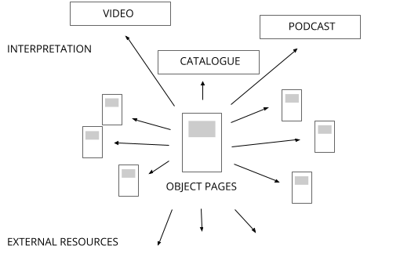
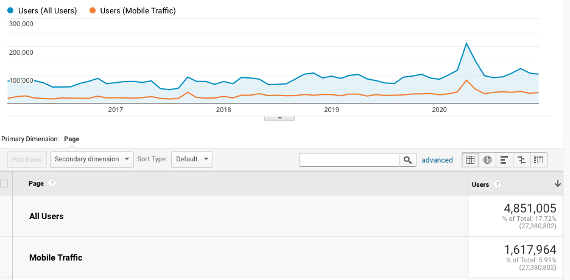
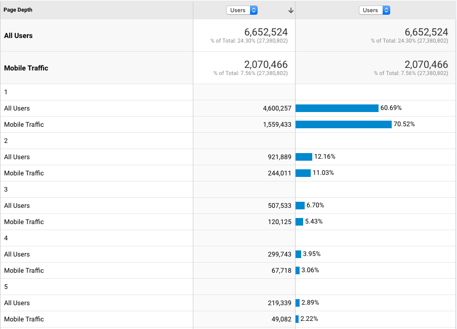

2. Who is it for? Audiences for online collections
- Chad Weinard
Online collections are for people. Moreover, they address a person’s need; online collections have a job to do.
These are bland, broad truisms, hardly worth saying. And yet, too often museum products are built to serve institutional goals rather than audience needs. Even broad consideration for audiences—for people—and what might help and delight them, can inform project direction.
Getty’s new collection online focuses on two broad audiences: researchers and enthusiasts.
Researchers
Researchers are the primary audience for Getty. These are users who come to the museum website with a specific purpose, needing answers to a specific question. They’ll know to look in the main navigation for a link to the collection. Internal audiences—museum staff needing quick access to collection info—fit neatly into this user group as well. (In many museums, staff prefer searching the public-facing online collection because accessing the internal collections management system is too tedious.) Researchers arrive to the collection online with a good idea of what they are looking for, and they know which search terms might get them what they want. They need little scaffolding or context around the collections as a whole.
Researchers’ experience paths
Goal: Researchers are looking for specific information on a specific object in order to complete their research.
- Arrive at an object page via collection search, Google search, or direct link.
- Find object page with deep information, including the full scope of Getty’s institutional knowledge
- perhaps comment/respond, download image/data, find related objects (by artist, creation date, etc.).
Enthusiasts
Enthusiasts have a different set of requirements. These are users who aren’t looking for a specific work of art using specialized art knowledge. That’s not to say that the enthusiast doesn’t have a specific question or purpose; it’s just that they’ll know an answer or solution when they see it. For the enthusiast, searching by keyword isn’t the best approach; search terms for visual features, or ideas, or themes, rarely work. A search box alone, in fact, can be a roadblock to the enthusiast. A dominant search box allows entry only to those who know a magic word, a search incantation. This is the dynamic described by Mitchell Whitelaw in his influential essay “generous interfaces.” When required to produce a magic word to open the collection, many a clever enthusiast will game the system by typing the first word that comes to mind, just to start looking. Visual browsing is the primary mode for the enthusiast; they’re eager to see a field of images and start searching and finding.
Enthusiasts’ experience paths
Goal: Enthusiasts are looking for interesting, non-specific objects or images for enjoyment and inspiration.
- Arrive at an object page via an interpretive layer, social media, Google image search, or visual browse.
- Skim images and information
- Perhaps download image, save/share
- Continue browsing via path of interesting-ness, related objects (by color, visual similarity, etc), interpretive materials, etc.
Why is a scholarly audience the primary audience?
Optimizing object pages for a scholarly audience can be the best approach for enthusiast audiences as well.
Object pages act as terminal nodes in a knowledge graph: there is no deeper level of information for an individual object. Object pages offer a complete record of institutional knowledge around an object at a stable url. This deep level of information is appropriate for scholarly audiences.
With their deep information, object pages provide a supportive foundation for interpretive layers that cater to enthusiasts and other audiences. Deep object pages allow other interpretive expressions of the collection—like visualizations, exhibition pages, online publications and games—to be nimble and tailored to a particular purpose and audience. An online educational resource meant for middle school students, for instance, can focus on engaging its unique audience through storytelling and resonant connections; it can rely on links to object pages to provide deep object-based information.
Object pages are fundamental multipurpose building blocks for interpreting the collection. They need to be useful for scholars—who use them to construct their scholarly work, and to staff—who use them to build interpretive programs. As building blocks, they are also useful to enthusiasts, students, teachers and others for use in a range of activities.
While the scholarly and enthusiast audiences have different goals and requirements, both can be addressed by this thoughtful approach to the object pages. Images are a top priority for both audiences, as is basic information. The scholarly audience will want detailed information as well, along with related objects (esp. objects related to scholarship). An enthusiast audience will want related objects, interpretation, and programs (esp. interesting links that spark curiosity). The object page can accommodate a range of needs.
How does an object page work?
-
As a destination (terminal node). An object page, or a collection of object pages, supports interpretive layers that can be optimized for any audience. The interpretive program (a lesson plan, an exhibition page, or a digital publication, for instance) can link to object pages where appropriate. This relieves the interpretive program from having to provide deep information on individual objects; instead, the program can give broad context tailored for specific goals and audiences.
-
As a hub. The object page is not just an end point for interpretation or scholarship; it is also a portal for further exploration. An object page links to relevant interpretive pages and related object pages, offering opportunities to discover new connections and context.

What would an object page look like if it were designed for an enthusiast audience?
It may not look that different, actually. A page designed for enthusiasts might put descriptive text—written for a general audience—above the fold with the large image. Images and alternative images are key for both audiences. Extended object info text may not be as important for enthusiasts—but it also wouldn’t deter them.
A related objects section may operate a bit differently for the two audiences. For the enthusiasts, we’d want to surface “interesting” objects that would extend the discovery journey. “Relatedness” may mean something different to a scholar: less serendipity, more human curation. For scholars, we may want to surface other objects that have appeared with the object in a publication, or in an exhibition, or in a gallery installation, for instance.
Are mobile visitors an important audience?
Short answer: Yes. In the last four years, 35% of Getty’s visitors to the online collection are using mobile devices, and this number is trending upward.
Optimizing online collections for mobile can open (or broaden) opportunities for engagement. Social sharing, email, and messaging are on-the-go activities that benefit when links lead to a responsive site.
Google Analytics, tracking users Jan 2016-Dec 2020, shows that 35% of Collection Online users are on mobile devices (not desktop or tablet). The percentage of mobile users is similar whether or not the collection landing page is included in the data. The percentage of mobile users is higher for the Getty site as a whole: about 40% of visitors to the Getty website overall are on mobile devices.

Do visitors use the online collection while in the galleries?
To date, not much. 9% of in-person respondents use their own mobile device to find “information about the art” while at the museum, according to recent Getty visitor survey data (2017-2018).
Limited use of collection online from inside the museum isn’t surprising. Encouraging such activity typically requires specific messaging, signage and prompts on labels, visitor guides, etc. (Not to mention easy-to-access wifi, charging stations, etc.)
Dynamics may be changing moving forward, however. The pandemic has pushed QR codes to the mainstream, and museum use is rising. (Scan a QR code on a gallery label for more object information.) Likewise, text recognition in mobile cameras is becoming standard. (Snap a photo of a label, select text, search Google…) The latest iPhones have a feature called Visual Lookup as part of the standard Photos app, which uses visual similarity to suggest links to object information. (Snap a photo of a painting, click a link to more information—powered by Siri Knowledge.)
Do people want the “wikipedia rabbit hole” browsing experience, where they follow links of interest?
Maybe…but it hasn’t been encouraged previously.
It’s hard to tell what visitors want by looking at analytics data, though we can learn a little about what they do. Google analytics shows that 60% of Collection Online visitors stay to see just one page. (That number is 70% for mobile visitors.) After the first page, there’s a drop in engagement: 12% of Collection Online users click through to see two pages. (This is a steeper drop than what we see for the site as a whole.) About 26% of Online Collection users see three or more pages.

There is an opportunity to encourage more exploration. We’ve found in our sector scan that museums are experimenting with new ways to present related objects and provide links to interesting contextual information (even info found on other sites.) There’s a natural overlap here: object pages should show all available contextual materials for an object, and interesting relationships as well, in order to best situate the object. Doing so can also spark a chain of associations: a Wikipedia rabbit hole.